name:opening ## Vertex Wise Testing for Populations of Graphs <img src="images/neurodata_purple.png" style="height:250px; float:left;"/> <br><br><br><br><br><br><br><br><br> --- ### Nonparametric two-sample test Given $\lbrace X\_i \rbrace\_{i=1}^n \overset{\text{i.i.d}}{\sim} F\_X$ and $\lbrace Y\_j \rbrace\_{j=1}^m \overset{\text{i.i.d}}{\sim} F\_Y$, we want to test <!-- \\[ \begin{array}{cc} H\_0: & F\_{X\_i} = F\_{Y\_i} \\\ H\_A: & F\_{X\_i} \neq F\_{Y\_i} \\\ \end{array} \\] --> \\[ \begin{array}{cc} H\_0: & F\_{X} = F\_{Y} \\\ H\_A: & F\_{X} \neq F\_{Y} \\\ \end{array} \\] -- In our case, $\lbrace X\_i \rbrace\_{i=1}^n$ and $\lbrace Y\_j \rbrace\_{j=1}^m$ are some choice of representation of a vertex. - rows of adjacency matrix - estimated latent positions --- ### Setting Two populations of graphs: 1. $\lbrace\mathbf{A}^{(g)}\rbrace_{g=1}^m \overset{\text{i.i.d}}{\sim} F\_X$ 2. $\lbrace\mathbf{B}^{(g)}\rbrace_{g=1}^m\\overset{\text{i.i.d}}{\sim} F\_Y$ <!-- $\lbrace\hat{X}^{(g)}\rbrace_{g=1}^m\in\mathbb{R}^{n\times d}$ --> .small[ where - $\mathbf{A}^{(g)}, \mathbf{B}^{(g)}\in\mathbb{R}^{n\times n}$ - $n=$ number of vertices - $m=$ number of graphs ] Assume: - Same number of vertices - Vertex correspondence -- Want to know which vertex $i\in [n]$ is significantly different? --- ### Testing procedure <!-- - .small[Let $\lbrace\hat{X}^{(g)}\rbrace_{g=1}^m $ be estimated latent positions corresponding to population 1] - .small[Let $\lbrace\hat{Y}^{(g)}\rbrace_{g=1}^m $ be estimated latent positions corresponding to population 2] --> 1. Choose a representation of vertices - Rows of adjacency matrices - Estimated latent positions - $\text{OMNI}(\mathbf{A}^{(1)}, \ldots, \mathbf{A}^{(m)}, \mathbf{B}^{(1)}, \ldots, \mathbf{B}^{(m)})$ - $\text{MASE}(\mathbf{A}^{(1)}, \ldots, \mathbf{A}^{(m)}, \mathbf{B}^{(1)}, \ldots, \mathbf{B}^{(m)})$ 2. For each vertex $i$, test using 2-sample distance correlation $$\text{DCorr}(\lbrack \mathbf{A}^{(1)}_i | \cdots | \mathbf{A}^{(m)}_i\rbrack^T, \lbrack \mathbf{B}^{(1)}_i | \cdots | \mathbf{B}^{(m)}_i\rbrack^T)$$ $$\text{DCorr}(\lbrack \hat{X}^{(1)}_i | \cdots | \hat{X}^{(m)}_i\rbrack^T, \lbrack \hat{Y}^{(1)}_i | \cdots | \hat{Y}^{(m)}_i\rbrack^T)$$ 3. Any vertex $i$ with $p_i \leq \alpha$ are signficantly different. --- ### Experimental Setting - 2 block SBM as RDPGs - $\vec{\pi} = [0.5, 0.5]^T$ - embedding dimension $d=2$ - Latent positions for each population: 1. .small[ $ \begin{aligned} X &= \begin{bmatrix} X_1\\\ X_2 \end{bmatrix}= \begin{bmatrix} 0.25 & 0.25\\\ -0.092 & 0.34 \end{bmatrix} \end{aligned} $, $ \begin{aligned} P_1 &= XX^T = \begin{bmatrix} 0.125 & 0.0625 \\\ 0.0625 & 0.125 \end{bmatrix} \end{aligned} $] 2. .small[ $ \begin{aligned} Y &= \begin{bmatrix} X_1\\\ \tilde{X}_2 \end{bmatrix} \end{aligned} $, $ \begin{aligned} P_2 &= YY^T \end{aligned} $] where $\tilde{X}_2$ is a modified $X_2$ via changing magnitude and/or the angle from $X_1$. --- ### Experimental Setting 1. Given $n$, sample $m$ graphs from each SBM $$ \lbrace A^{(g)}\rbrace\_{g=1}^m \sim\text{SBM}(P_1, n, \vec{\pi}) $$ $$ \lbrace B^{(g)}\rbrace\_{g=1}^m \sim\text{SBM}(P_2, n, \vec{\pi}) $$ 2. Estimate latent positions via OMNI and MASE For each vertex, 3. Compute 2-sample distance correlation on the latent positions 4. Compute probability of rejecting the null Measure 1. Average probability of rejecting the null per block --- ### Simulation 1 - Increase the magnitude of $X_2$ .small[ $ \begin{aligned} X &= \begin{bmatrix} X_1\\\ X_2 \end{bmatrix}= \begin{bmatrix} 0.25 & 0.25\\\ -0.092 & 0.34 \end{bmatrix} \end{aligned} $, $ \begin{aligned} P_1 &= XX^T = \begin{bmatrix} 0.125 & 0.0625 \\\ 0.0625 & 0.125 \end{bmatrix} \end{aligned} $] .small[$ \begin{aligned} Y &= \begin{bmatrix} X_1\\\ (1+\delta) X_2 \end{bmatrix} \end{aligned} $, $ \begin{aligned} P_2 &= YY^T = \begin{bmatrix} 0.125 & (\sqrt{1+\delta})0.0625\\\ (\sqrt{1+\delta})0.0625 & (1+\delta)0.125 \end{bmatrix} \end{aligned}$] 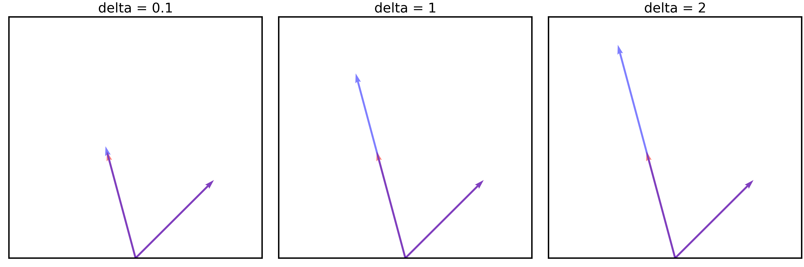 --- ### Type I error increases with $\delta$ 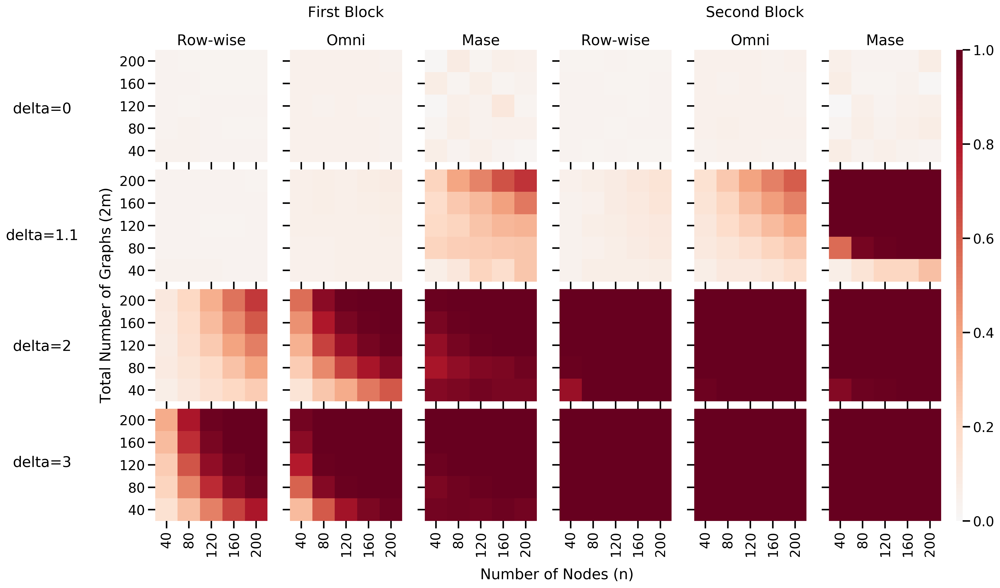 --- ### Means diverge as $\delta$ increases (OMNI) - Visualize $\frac{1}{m}\sum\_{g=1}^m\hat{X}\_i^{(g)}$ and $\frac{1}{m}\sum_{g=1}^m\hat{Y}\_i^{(g)}$ 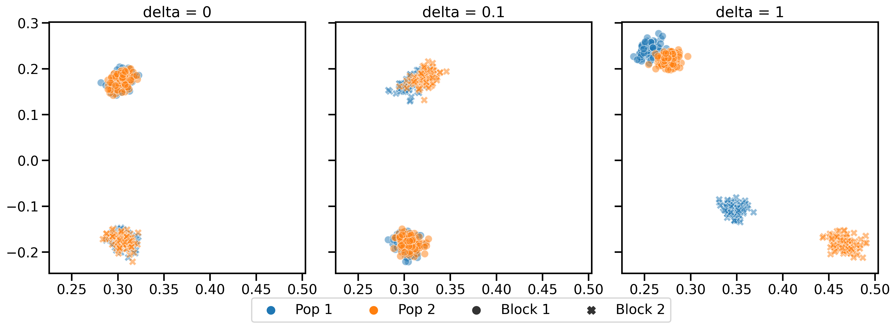 - $n=100$, $m=50$ - Circles = same true latent positions - Xs = different true latent positions --- ### Absolute differences in means - $\frac{2}{nm} \vert \sum\_{j\in B\_i}\sum\_{g=1}^m \hat{X\_j}^{(g)} - \hat{Y\_j}^{(g)} \vert$ for $i \in [2]$ - Expectation: circles at origin, Xs at not origin 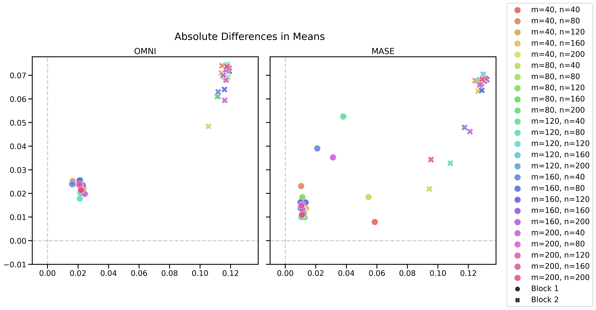 --- ### Simulation 2 - Change the angle between $X_1$ and $X_2$. .small[ $$ \begin{aligned} P_1 &= \begin{bmatrix} 0.125 & 0.0625 \\\ 0.0625 & 0.125 \end{bmatrix}\\\ P_2 &= \begin{bmatrix} 0.125 & (\cos{60+\theta})0.125\\\ (\cos{60+\theta})0.125 & 0.125 \end{bmatrix} \end{aligned} $$] 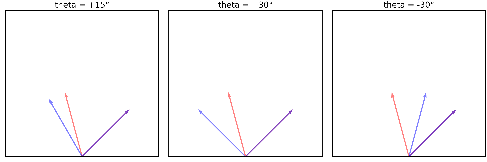 --- ### Type I error increases with $\delta$ 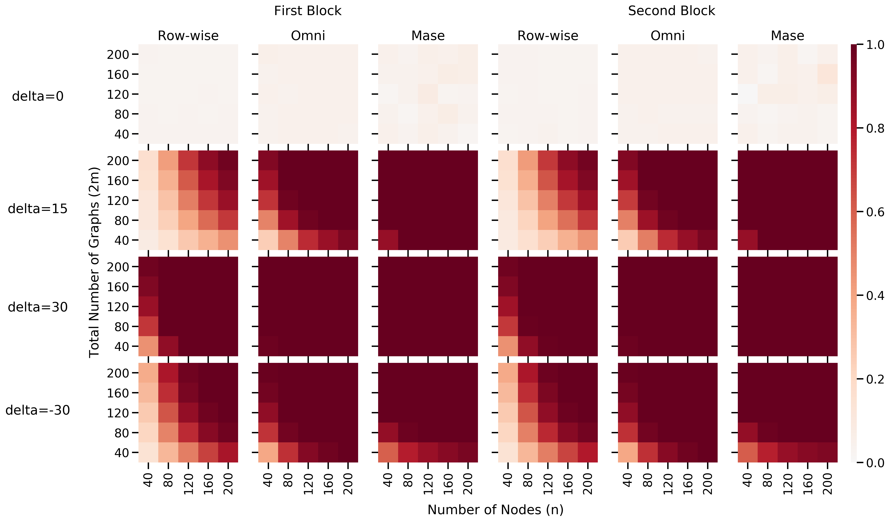 --- ### Means diverge as $\theta$ increases (OMNI) - Visualize $\frac{1}{m}\sum\_{g=1}^m\hat{X}\_i^{(g)}$ and $\frac{1}{m}\sum_{g=1}^m\hat{Y}\_i^{(g)}$ 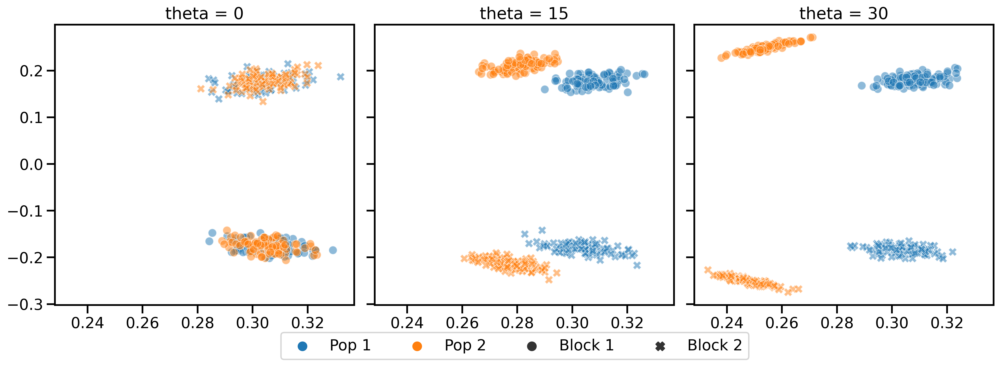 - $n=100$, $m=50$ - Circles = same true latent positions - Xs = different true latent positions --- ### Absolute differences in means - $\frac{2}{nm} \vert \sum\_{j\in B\_i}\sum\_{g=1}^m \hat{X\_j}^{(g)} - \hat{Y\_j}^{(g)} \vert$ for $i \in [2]$ - Expectation: circles at origin, Xs at not origin 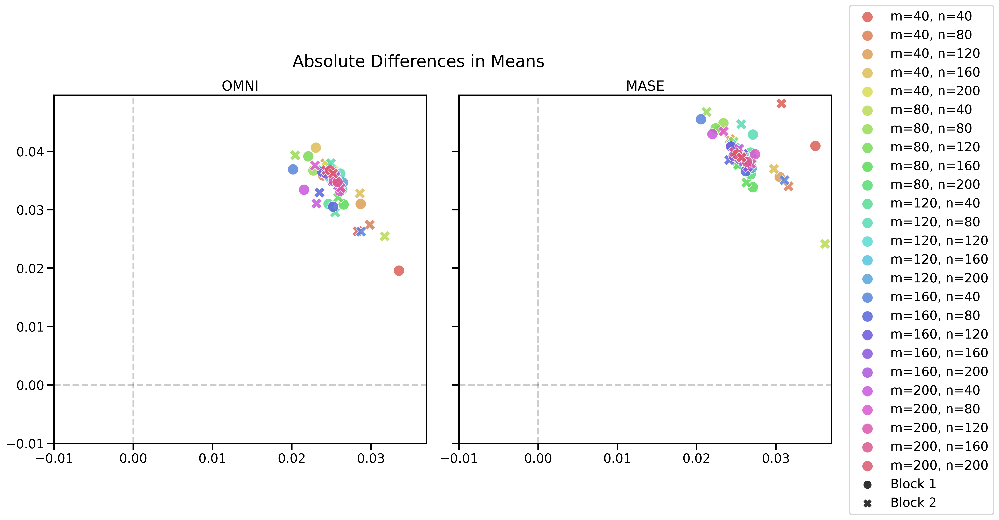 --- ### Simulation 3 - Change magnitude and angle so cross-block probability remains the same. $$ \begin{aligned} P_1 = \begin{bmatrix} .125 & .0625\\\ .0625 & .125 \end{bmatrix},~ P_2 = \begin{bmatrix} .125 & .0625\\\ .0625 & .125 + \delta \end{bmatrix} \end{aligned} $$ 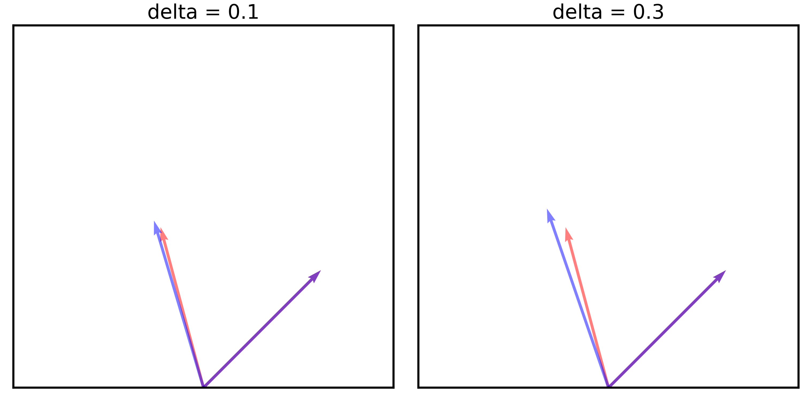 --- ### Type I error = $\alpha$ for row-wise and OMNI 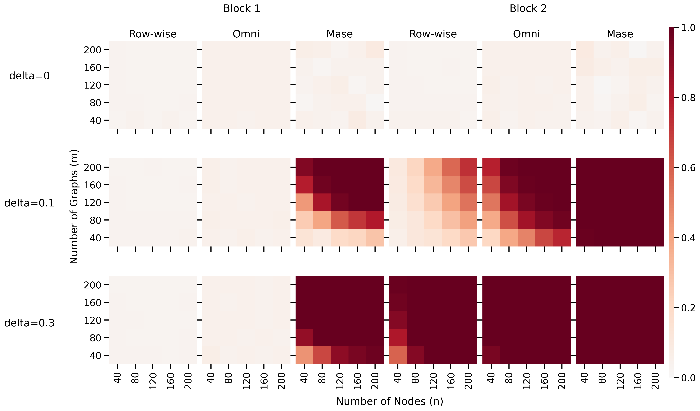 --- ### Means diverge as $\delta$ increases (OMNI) - Visualize $\frac{1}{m}\sum\_{g=1}^m\hat{X}\_i^{(g)}$ and $\frac{1}{m}\sum_{g=1}^m\hat{Y}\_i^{(g)}$ 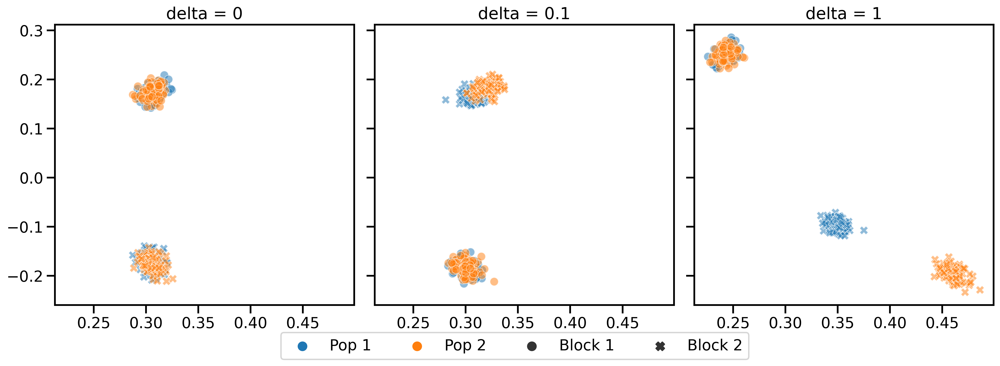 - $n=100$, $m=50$ - Circles = same true latent positions - Xs = different true latent positions --- ### Absolute differences in means - $\frac{2}{nm} \vert \sum\_{j\in B\_i}\sum\_{g=1}^m \hat{X\_j}^{(g)} - \hat{Y\_j}^{(g)} \vert$ for $i \in [2]$ - Expectation: circles at origin, Xs at not origin 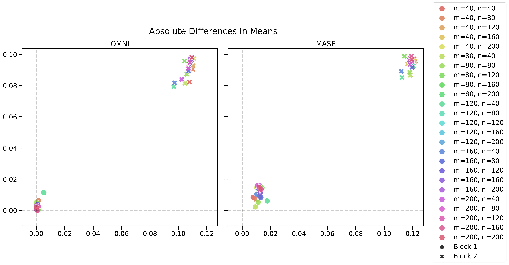 --- ### Summary - Jointly embedding graphs leads to biased estimates - How to fix? ---